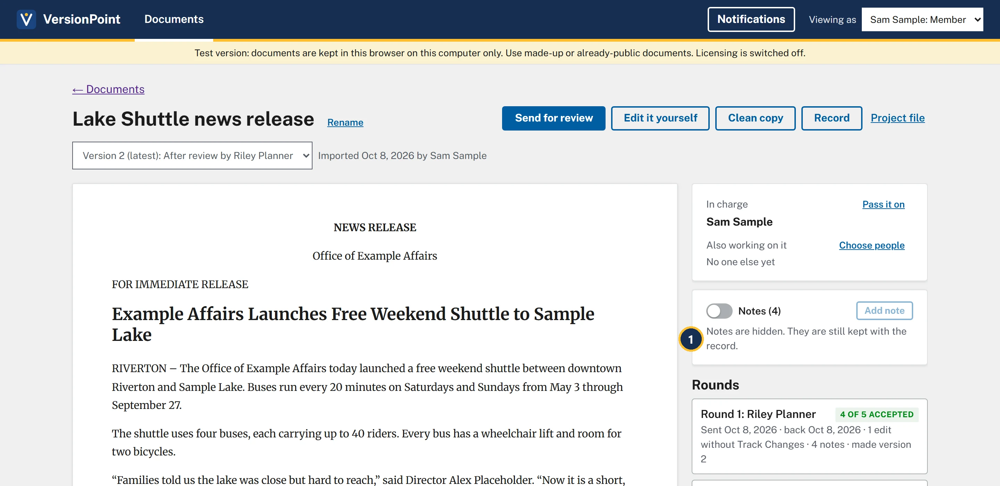
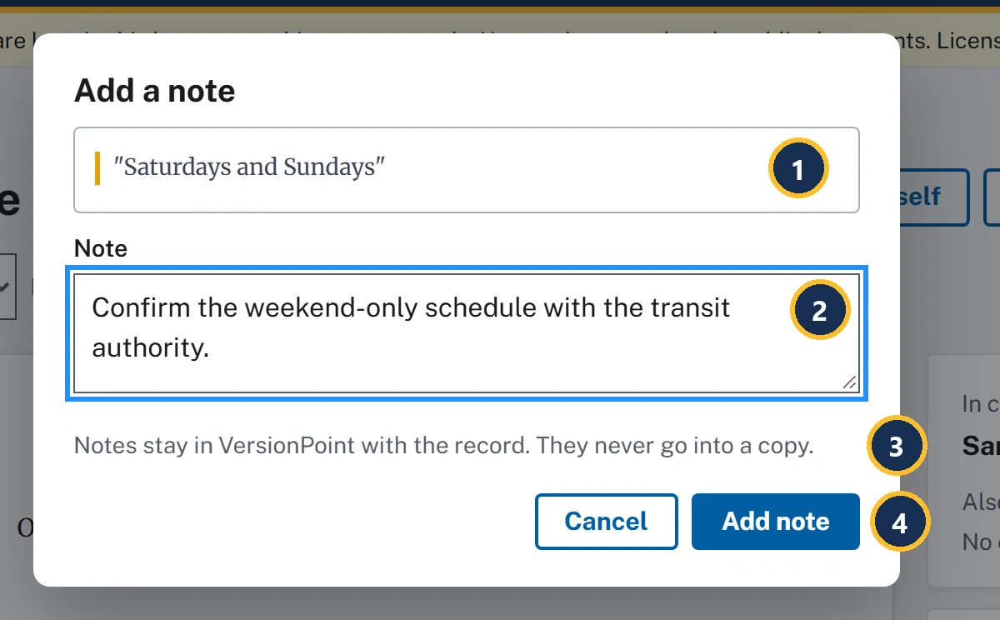

Lesson 68 minutesThe Lake Shuttle, version 2
Notes that stay
Read, reply to, resolve, hide and add margin notes, and see why none of them ever goes out in a copy.
Why it matters
Margin notes are where reviewers explain themselves, and they're also what leaks when a copy everyone thought was clean isn't. VersionPoint keeps every note next to the words it's about, and never puts one in a copy, so a reviewer's aside can't end up in front of a reporter.
Watch
![The document page on version 2. Callout 1 marks the highlighted phrase up to 40 riders in the release; and room for two bicycles and Clean Commute Grant are highlighted too. Callout 2 marks the Notes (4) switch, turned on. Callout 3 marks the Add note button, greyed out. Callout 4 marks the line Notes live here, never in the copies that go out. Callout 5 marks the top of Riley Planner's first note: Riley Planner, round 1, Oct 8, 2026, on the quoted words up to 40 riders. Callout 6 marks its Reply and Resolve buttons. Below are Riley's note on and room for two bicycles, and Riley's note on Clean Commute Grant with Drew Grants's reply.](assets/l6-notes-a.webp)
- A highlighted phrase has a note on it. Click it to pick out its note.
- The Notes (4) switch shows or hides the notes. The number counts replies too: three notes and Drew Grants's reply.
- Add note is greyed out until you select some words on the page. Point at it and it says Select some text on the page first.
- Notes live here, never in the copies that go out.
- Who wrote the note and where it came from: Riley Planner · round 1, then the date and the quoted words.
- Reply and Resolve.

- Notes are hidden. They are still kept with the record. Hiding is only for your screen.

- The words you selected. The note stays tied to them.
- Note: what you want to say.
- Notes stay in VersionPoint with the record. They never go into a copy.
- Add note saves it.
Notes follow their words
A note stays with its words into each new version. If the words move or change, the note says so: The words moved, The words it pointed at have changed or The paragraph it pointed at was taken out. None of these comes up with the practice release.
While a returned copy waits for decisions, a note quotes its words as they read in the copy you sent: Riley's note said up to 48 riders until you accepted the change, and now says up to 40 riders.
Try it
Start on the document page for Lake Shuttle news release, on Version 2 (latest): After review by Riley Planner, where lesson 5 left it.
- Find the three highlighted phrases in the release, up to 40 riders, and room for two bicycles and Clean Commute Grant, and the notes beside them.
- Turn the Notes (4) switch off. The page says Notes are hidden. They are still kept with the record. and the highlights go. Turn it back on.
- On the grant note, choose Reply, type Use the full name in the next round. and choose Reply. Your reply shows under Drew Grants's.
- On the seated-capacity note (up to 40 riders), choose Resolve. The button changes to Reopen, and the note greys out.
- Select the words Saturdays and Sundays in the release, then choose Add note.
- In Note, type Confirm the weekend-only schedule with the transit authority. and choose Add note. The form closes, and your note is at the top of the list.
Check your work
![The notes card after the steps. Callout 1 marks the switch, now Notes (6). Callout 2 marks Sam Sample's new note: Sam Sample, note, on the quoted words Saturdays and Sundays: Confirm the weekend-only schedule with the transit authority. Next is Riley's seated-capacity note, greyed out, with Reply and Reopen; callout 4 marks Reopen. Then Riley's note on and room for two bicycles. Last, Riley's grant note with Drew Grants's reply and, under it, Sam Sample's reply marked by callout 3: Use the full name in the next round.](assets/l6-check-a.webp)
- Notes (6): four notes and two replies.
- Your new note, marked Sam Sample · note.
- Your reply, under Drew Grants's.
- Reopen: the seated-capacity note is resolved, and still here.
Watch out for
Quick check
Pick an answer to see why it is or isn't right. Nothing is scored or sent anywhere.
Question 1
Your director wants to read version 2 on your screen without the clutter. What do you do?
Question 2
Will Riley's notes go out with the next review copy?
Question 3
Drew's reply settled the grant name for now, but you want the next reviewer's round to fix it. Where does that reminder go?
Lesson 7 sends a clean copy, and catches the [insert year] you let through.